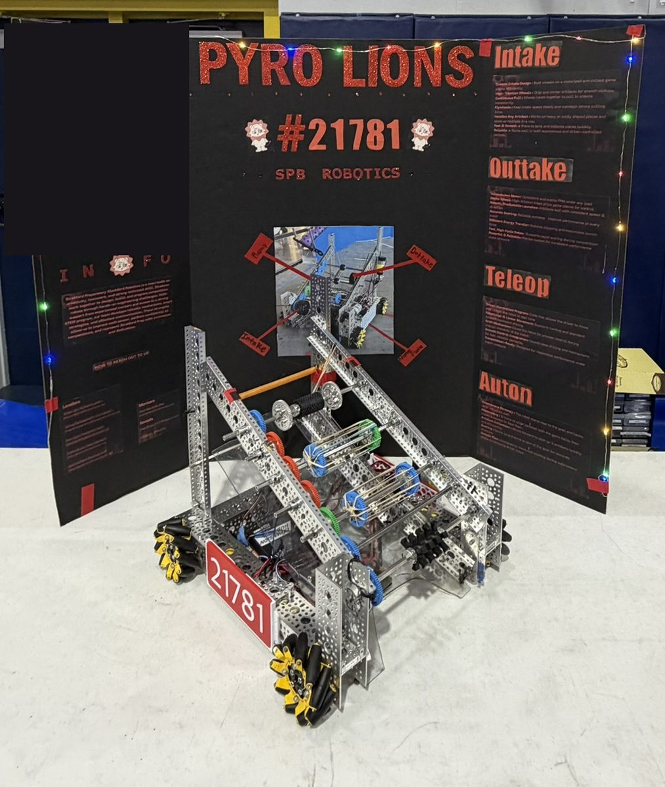
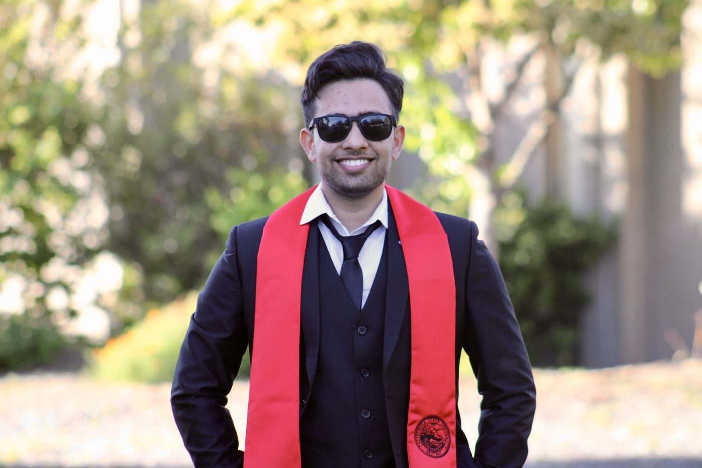

Teaching, robotics, and the research questions behind them.
I work with high school students on computer science, robotics, and cybersecurity. Teaching is where my research questions come from.
Research interests
What I want to study.
These are the questions I keep coming back to after teaching teenagers computer science, running robotics teams, and coaching CTF competitors.
K-12 computer science education
How students learn to program and reason about computing in high school, and how a university-level syllabus can be adapted for them.
AI literacy and AI-supported learning
How AI tools can support learning in schools, and what students need to understand to use them well.
Cybersecurity education
How to teach security thinking to teenagers, from cryptography basics to hands-on capture-the-flag practice.
Robotics and competition-based learning
What students gain from building robots in teams and competing, and how a program can support every sub-team.
Learning technologies
How to design learning tools and evaluate whether they work for the students using them.
Teaching
What I teach.
I started teaching high school in August 2024 and have taught at two schools since. Before that I taught lab sections and tutored at Cal State East Bay.
AP Computer Science AStratford Prep, 2025-26 and 2026-27
AP CybersecurityStratford Prep
Honors RoboticsStratford Prep
Advanced CybersecurityStratford Prep, 2025-26. Adapted from UC Berkeley's CS 161 (Computer Security), re-scoped and re-sequenced for high school rigor and student level.
Programming, data structures, algorithmsOakland Unified School District, 2024-25. Hands-on projects with JavaScript and Code.org.
C++ labs for CS 201Cal State East Bay. Assignment scores improved 25%.
Robotics
Director of Robotics, four teams.
I direct the robotics program at Stratford Preparatory Blackford: a flagship varsity FRC team and three FTC teams, one varsity and two junior varsity. My role is program and project management. I coordinate the mechanical, electronics, software, design, and business sub-teams, lead outreach, and guide the technical teams and their mentors.
I coached the varsity and junior varsity FTC teams through league play and qualifiers in 2025-26, and the teams reached the playoffs in their first competition season. We compete throughout the year, including off-season competitions.

Pyro Lions, FTC Team #21781
Cybersecurity and CTFs
I like breaking puzzles and building new ones.
I advise the Cybersecurity Club, where students prepare for and compete in capture-the-flag competitions, including PicoCTF. In my free time I teach students how to approach CTF challenges, solve cryptography challenges for fun, and create CTFs of my own.
Cryptography is one of my favorite corners of security. Try the oldest cipher in the book on the right, then see whether a friend can crack your message without the key.
Shift by 26 minus your key to decode.
Experience
Where I've worked.
Jul 2025 to present
Stratford Preparatory Blackford
San Jose, CA
Director of RoboticsAug 2026 to present
Direct a four-team robotics program (the flagship varsity FRC team and three FTC teams) in a program and project management role.
Coordinate the mechanical, electronics, software, design, and business sub-teams, lead outreach, and guide the technical teams and their mentors.
Computer Science TeacherJul 2025 to present
Teach AP Computer Science A, AP Cybersecurity, and Honors Robotics.
Designed and taught an Advanced Cybersecurity course adapted from UC Berkeley's CS 161 for high school students (2025-26).
Coached the varsity and junior varsity FTC teams through league play and qualifiers (2025-26). Both reached the playoffs in their first competition season.
Advisor to the Cybersecurity Club, mentoring students who prepare for and compete in capture-the-flag competitions such as PicoCTF.
Aug 2024 to Jun 2025
Computer Science Instructor
Oakland Unified School District, Oakland, CA
Designed and delivered a curriculum on programming, data structures, and algorithms, with hands-on projects and interactive JavaScript and Code.org lessons.
Mentored senior students on capstone projects in web development and research methods, which led to student research papers and technical portfolios.
Jun 2024 to Oct 2024
Volunteer Software Engineer
One Community Global, remote
Pull request reviews and code quality work contributed to a 15% reduction in production-breaking bugs. Performance testing and optimizations improved load times by 20%.
Aug 2023 to May 2024
Teaching Associate and Instructional Student Assistant
California State University, East Bay, Hayward, CA
Led hands-on C++ lab sessions for CS 201, and assignment scores improved 25%.
Tutored mathematics and computer science one-on-one at the Student Center for Academic Achievement and helped build self-paced digital learning resources.
Jun 2023 to Jul 2024
Shipping and Receiving
California State University, East Bay, Hayward, CA
Worked in shipping and receiving for the university while completing my M.S. in computer science.
Jun 2021 to Aug 2021
Android App Developer Intern
BlueLine Computers, Karnataka, India
Built the front end of an iOS and Android application in Dart and Flutter, collaborating through Git.
Education
Where I studied.
May 2024
M.S., Computer Science
California State University, East Bay, Hayward, CA. GPA 3.636.
May 2022
B.S., Computer Science and Engineering
NMAM Institute of Technology (NMAMIT), Karnataka, India.

M.S. graduation, Cal State East Bay
Skills
Tools I use.
Languages
Python
Java
C++
JavaScript
HTML/CSS
Technologies
React
Node.js
Git and GitHub
Flutter/Dart
Code.org
Robotics
FRC and FTC program leadership
Coaching
Mentoring
Methods
Instructional design
Curriculum and assessment design
Data analysis
AI applications in education
Want the full details?
My CV has everything on one page, and I'm glad to answer questions.